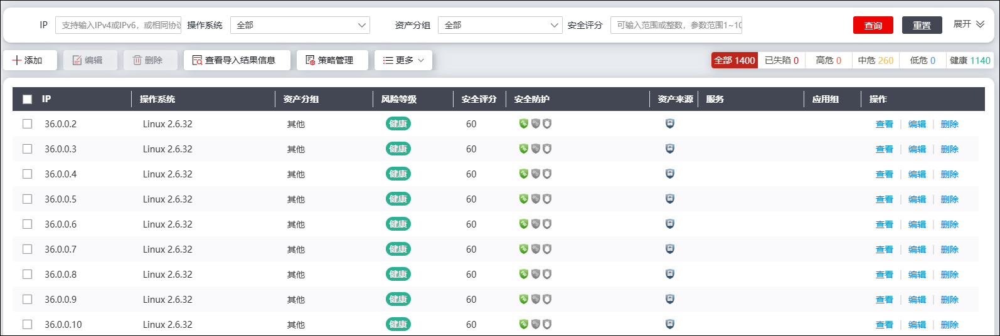
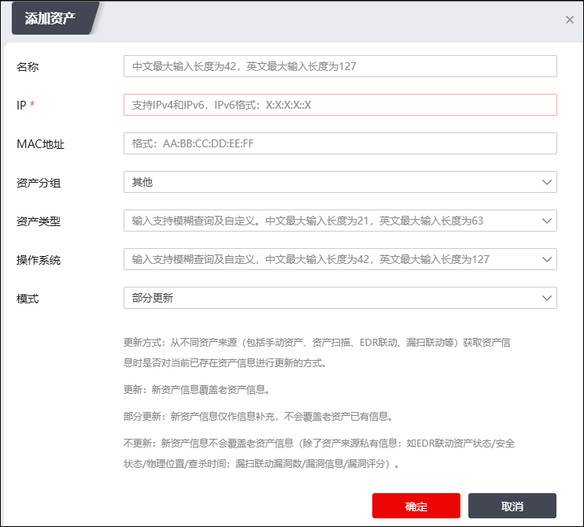
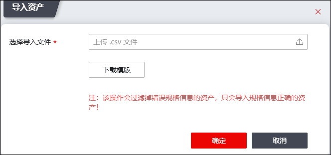
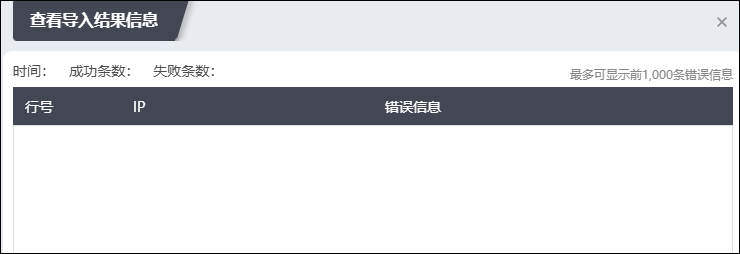
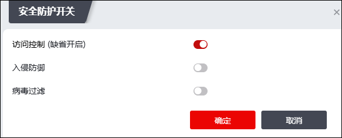
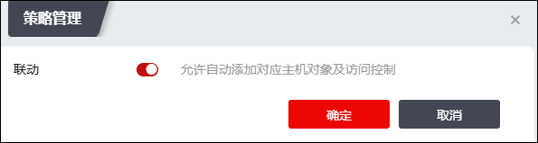
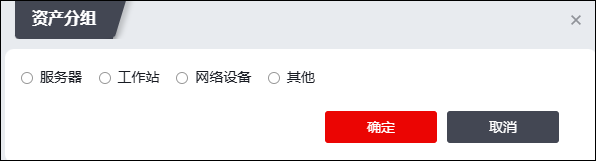

资产管理模块支持手动添加资产，同时可以对各类资产进行管理。相关操作步骤如下：
| 步骤1 | 选择 ，界面如下图所示。 |

如图红框处所示，管理员可通过切换风险等级标签查看对应风险等级的资产信息，默认显示全部资产。双击某一资产，可查看并编辑其安全策略配置。
说明：“资产来源”列图标表示该资产来源。
| 步骤2 | 添加资产。 |
1）手动添加资产
点击【添加】，弹出窗口界面如下图所示。

在添加资产时，各项参数的具体说明如下表所示。
参数 |
说明 |
|---|---|
名称 |
设置资产名称。最多输入127个字符。 |
IP |
必填项，设置资产IP地址，此处支持配置IPv4和IPv6地址。 |
MAC地址 |
设置资产MAC地址。格式：AA:BB:CC:DD:EE:FF。 |
资产分组 |
设置资产分组，可选项包括：服务器、工作站、网络设备和其他。不做设置时，默认配置为“其他”。 |
资产类型 |
设置资产类型。支持通过模糊查询进行筛选，同时支持配置自定义类型（在文本框中输入即可，最多支持63个字符）。 |
操作系统 |
设置资产的操作系统信息。此处支持通过模糊查询进行筛选，同时支持自定义操作系统类型（在文本框中输入即可，最多支持127个字符）。 |
模式 |
设置从不同资产来源（包括手动资产、资产扫描、EDR联动、漏扫联动、被动资产发现等）获取资产信息时是否对当前已存在资产信息进行更新。可选项：部分更新、不更新和更新。默认为“部分更新”。 说明： 1）部分更新：仅作信息补充，不会覆盖老资产已有信息。 2）不更新：不会覆盖老资产信息（除了资产来源私有信息：如EDR联动资产状态/安全状态/物理位置/查杀时间；漏扫联动漏洞数/漏洞信息/漏洞评分） 3）更新：新资产信息覆盖老资产信息。 |
配置完成后点击【确定】按钮即可。
2）导入资产
点击“更多”并选择“导入”，弹出窗口界面如下图所示；下载文件模板，录入资产信息之后，选择上传文件，点击【确定】按钮即可。

点击“查看导入结果信息”可查看导入结果信息，界面如下图所示。

| 步骤3 | 开启安全防护。 |
在资产列表中选中资产，点击“更多”后选择“防护优化”可配置资产的安全引擎功能，界面如下图所示。

开启相应的安全防护开关后，可在资产列表中点亮相应的安全引擎图标。
说明：支持在资产列表中直接点击图标开启对应安全引擎。
| 步骤4 | 点击“策略管理”，可在弹出窗口中配置是否允许自动添加相关策略，界面如下图所示。 |

| 步骤5 | 点击“更多”后选择“资产分组”可修改该资产的分组信息，如下图所示。 |

| 步骤6 | 在资产列表中点击“详情”列的“查看”，可查看资产情况、相关安全事件趋势和安全事件举证信息。 |